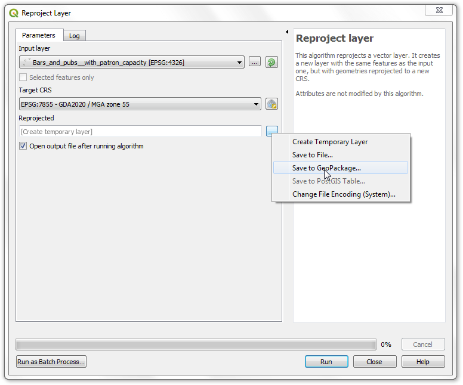
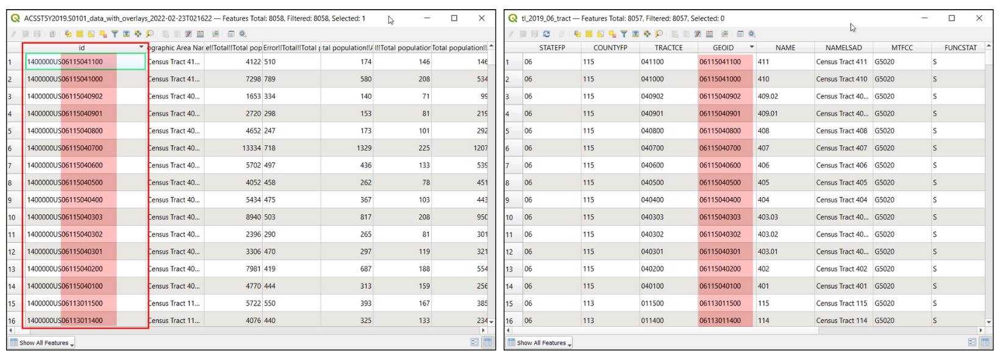
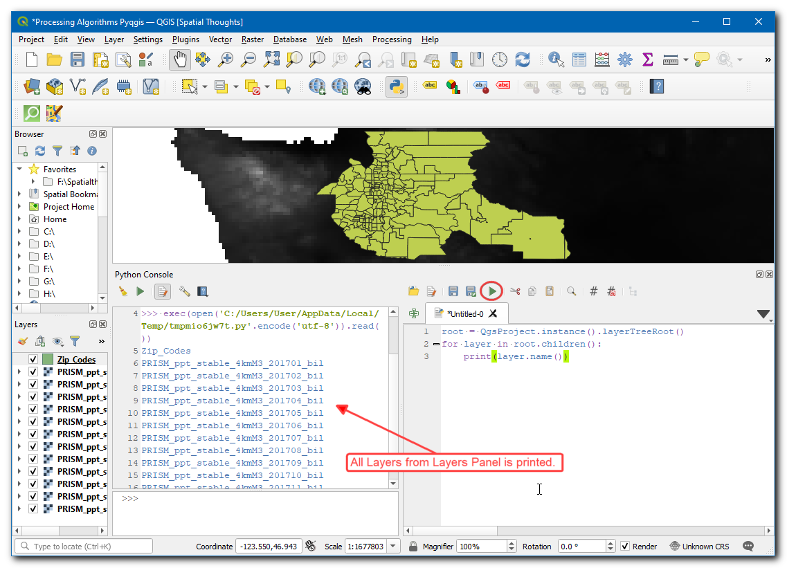

Rasters mozaïeken en clippen (QGIS3)¶
Deze handleiding verkent enkele basistechnieken voor het werken met rasters in QGIS zoals mozaïeken en sub-instellingen.
Overzicht van de taak¶
We zullen hoogtegegevens downloaden voor Sri Lanka in de vorm van SRTM-tegels, ze samenvoegen en de resulterende mozaïek clippen naar de grenzen van het land.
Andere vaardigheden die u zult leren¶
De renderer Schaduw voor heuvels gebruiken om hoogtegegevens te visualiseren.
De gegevens ophalen¶
Land Processes Distributed Active Archive Center (LP DAAC) verschaft NASA Shuttle Radar Topography Mission (SRTM) Global 1 arc second gegevensset als hoogtetegels.
Een gemakkelijke interface o om tegels voor een bepaald gebied te downloaden is de 30-Meter SRTM Tile Downloader door Derek Watkins. Download de individuele SRTM-tegels die Sri Lanka bedekken. Onthoud dat u een gratis account voor Earth Data nodig hebt om de gegevens te kunnen downloaden.

We zullen ook het Admin 0 - Countries shapefile van Natural Earth nodig hebben.
Voor het gemak kunt u direct een kopie van de gegevensset downloaden vanaf de links hieronder:
Gegevensbron [SRTM] , [NATURALEARTH]
Procedure¶
Open QGIS en zoek de gedownloade bestanden op in het paneel Browser. Vergroot individuele zip-bestanden zodat zij de
.hgt-bestanden weergeven. Houdt de Ctrl-toets ingedrukt en selecteer alle individuele bestanden. Eenmaal geselecteerd, sleep ze in het kaartvenster.

U zult 11 individuele lagen zien geladen in het paneel Lagen en weergegeven in het kaartvenster. We zullen deze individuele bestanden samenvoegen tot één enkele mozaïek. Ga naar .

Zoek en lokaliseer het algoritme . Dubbelklik om het te openen.

Klik, in het dialoogvenster Merge, op de knop … naast Invoerlagen. Klik op Alles selecteren om alle individuele lagen te selecteren.

Zoals vermeld in de dataset layer details, is het gegevenstype voor de invoer 16-bit signed integer. We zouden hetzelfde gegevenstype moeten houden voor de samengevoegde laag om de integriteit van de gegevens te behouden. Selecteer
Int16als het Type uitvoergegevens. Ook is de standaard indeling voor de uitvoer GeoTiff. GeoTiff-bestanden kunnen heel groot worden als zij niet zijn gecomprimeerd. Kies``Hoge compressie`` als het Profiel. Klik op Uitvoeren.

Als de verwerking eenmaal is voltooid zult u een nieuwe laag
Samengevoegdzien toegevoegd aan het paneel Lagen. In het geval dat de laag niet boven in de stapel staat, selecteer hem en sleep hem naar de bovenste positie in het paneel Lagen.

U zult zien dat de laag
Samengevoegdde samengevoegde gegevens voor de hoogte bevat uit de individuele invoerbestanden. De standaard visualisatie geeft alleen de pixelwaarden in het bereik 0-255 weer. Maar onze gegevens bevatten pixels met waarden van -14 tot en met 2371, resulterend in een lage rendering van het contrast. Laten naar een beter visualisatie wijzigen. Klik op de knop Paneel Laag opmaken openen in het paneel Lagen.

Klik, in het paneel Laag opmaken, op de keuzelijst Type renderer en selecteer de renderer
Schaduw voor heuvels. Deze optie voor renderen is in het bijzonder geschikt voor hoogtegegevens.

Een andere veel voorkomende bewerking bij het werken met rasters is om een raster te clippen tot het gebied van uw interesse. Voor deze handleiding zullen we de samengevoegde laag clippen tot de landsgrenzen van Sri Lanka. Lokaliseer het gedownloade bestand
ne_10m_admin_0_countries.zipen vergroot het. Sleep het bestandne_10m_admin_0_countries.shpin het kaartvenster.

Selecteer de nieuw toegevoegde laag
ne_10m_admin_0_countriesin het paneel Lagen. Klik op de knop Objecten selecteren op de werkbalk Attributen. Eenmaal geselecteerd, klik op de polygoon voor Sri Lanka om die te selecteren.

Behoud de selectie zoals die is en open . Zoek en lokaliseer het algoritme . Dubbelklik om het te openen.

Selecteer, in het dialoogvenster Raster op maskerlaag clippen,
Samengevoegdin als de Invoerlaag. Selecteerne_10m_admin_0_countriesals de Maskeerlaag, en selecteer het keuzevak Alleen geselecteerde objecten. Voer0.0000in als Wijs een specifieke waarde Geen data toe aan de uitvoerbanden. Kis, zoals eerder,Hoge compressieals the Profiel. Klik op Uitvoeren.

Een nieuwe laag
Geclipt (masker)zal worden toegevoegd aan het paneel Lagen. Op dit punt zou het moeilijk kunnen zijn de uitvoer te zien omdat we teveel overlappende lagen zichtbaar hebben. Klik op de knop Kaartthema’s beheren in het paneel Lagen en kiesAlle lagen verbergen.

Schakel alleen de laatste laag
Geclipt (masker)in en maak die op met de rendererSchaduw voor heuvelszoals we eerder deden.

De samengevoegde en verkleinde uitvoer voor de hoogtelaag voor Sri Lanka is klaar.

If you want to give feedback or share your experience with this tutorial, please comment below. (requires GitHub account)